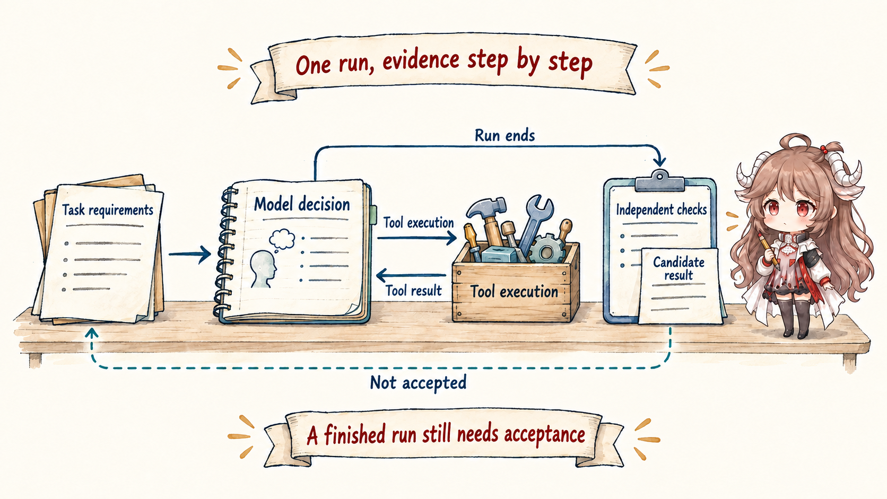
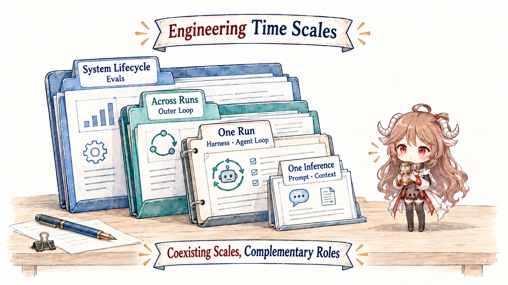
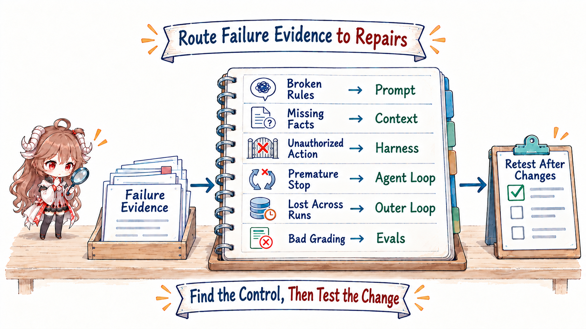

In this series, an agent is a work system made from a model, an outer program, and tools. The model chooses a next step. The program prepares information, executes real actions, and records results. Tools let the system read files, edit code, and run tests.
After this part, you should be able to answer: what must the model know, who executes actions, why the system repeats, who carries work after a run ends, and who confirms completion?
Source note: this article relies on official public material from OpenAI and Anthropic. Vendors use terms such as harness with different scopes, so this series adopts local definitions for teaching and design. Diagrams and JSON show mechanism shapes, not private implementations.
1. Build the complete picture from one task
1.1 Follow one agent task from start to finish
Suppose a payment test fails. The task is: “Find the cause, make the smallest safe change, run the payment tests, and leave evidence for review.” A normal successful path looks like this:
- The system gives the model the task requirements.
- It prepares the failure log, relevant code, and project rules so the model sees the current facts.
- The model proposes which file to read or which test command to run.
- The outer program checks that the action exists, its arguments are valid, and permission allows it before execution.
- The file content or test result returns to the model as new evidence.
- The model keeps reading, editing, and verifying until it finishes or can clearly explain why it cannot continue.
- Tests, static checks, or a reviewer independently confirm the result instead of trusting “fixed” on its own.

1.2 Name the six problems along that path
AI Engineering begins with six ordinary questions, not six terms to memorize.
1.2.1 How do we make the requirements clear?
Writing the goal, boundaries, completion evidence, and delivery format as an explicit work instruction is prompt engineering.
1.2.2 What should the model see right now?
Investigation needs the failure log; editing needs relevant code; verification needs the current diff and latest test output. Selecting that material is context engineering.
1.2.3 How does a proposed action really happen?
“Run the tests” is only a proposal. The software that checks arguments and permission, isolates execution, runs the tool, and stores results is the runtime harness.
1.2.4 How can the agent act, observe, and act again?
The outer program repeatedly asks the model for a step, executes it, returns the result, and decides whether to continue. That within-run cycle is the agent loop.
1.2.5 How does work continue after one run ends?
A run may stop for time, budget, or a human decision. The cross-run process that saves progress, schedules another run, limits retries, and prevents duplicate work is the outer loop.
1.2.6 Who proves the system really succeeded?
Repeatable tests, rules, model judges, and human review form the system's exam. Those mechanisms are evals.
If you only need the beginner’s map, you already have the main story. The second half restates it in engineering language for readers who need to review system boundaries, APIs, and failure ownership.
2. Compress the story into an engineering map
2.1 Put the six responsibilities on their time scales
Step back from the story and the responsibilities last for different lengths of time. The model judges one next step at a time. Reading, editing, and testing repeat within one run. The same task card may survive several runs. Evals compare many tasks and system versions.
Engineering gives those scales names. One model call is an inference. One “model decision–tool action–returned result” exchange is a tool cycle. One Agent execution from start to completion or interruption is a run. A task card that survives several runs is a work item. The table below only compresses the six responsibilities you have already learned onto those scales.

| Surface | Operational definition in this series | Primary time scale | Typical failure |
|---|---|---|---|
| Prompt | The behavioral contract: role, goal, constraints, precedence, output, and tool semantics. | Behavior for an inference | Ambiguous intent, conflicting rules, output drift |
| Context | The working set actually visible to and usable by the model in one call. | Reassembled per inference | Missing, noisy, stale, or poorly placed evidence |
| Runtime harness | The execution environment and control plane outside the model that carries a run. | One run | Uncontrolled effects, broken state, no recovery |
| Agent loop | Repeat reasoning, action, and observation until an exit condition is met. | One run, potentially many inferences | Premature stop, spinning, exhausted budget |
| Outer loop | Trigger, select, verify, persist, retry, and escalate across runs. | Multiple runs | Duplicate work, lost state, retry storms |
| Evals | Repeatable outcome truth and feedback for system change. | System lifecycle | Treating “the agent said done” as done |
These are not mutually exclusive job titles. One change can touch prompt, context policy, and harness. A review still needs to name each surface; otherwise improvement cannot be attributed and regressions cannot be localized.
2.2 Ask who owns each step
Ask “who has the final say?” at each point in the seven-step story. The user decides the goal. The runtime prepares material and guards tools. The repository and test process hold real results. Durable storage keeps progress across runs. An evaluator accepts or rejects evidence. Engineering calls the party that can authoritatively confirm or change a state its owner. One engineering responsibility may involve several owners, so the model matters but is not the only state machine.
2.2.1 Turn a goal into verifiable done
“Fix the test” gives direction but no boundary. May production code change? Which commands must pass? Is network access allowed? What evidence should a reviewer receive? The prompt surface expresses those requirements as behavior. The eval surface turns some of them into checks. They meet at the goal, but they are not the same mechanism.
2.2.2 Project stored material into one model call
OpenAI’s official prompt engineering guide discusses high-level instructions, message roles, tools, and input as parts of request design. Anthropic’s context engineering article emphasizes that an agent chooses what belongs in the next inference at every step. A useful conceptual request shape is:
{
"instructions": "Fix the failing payment test; do not change public APIs.",
"tools": ["read_file", "search", "apply_patch", "run_tests"],
"input": [
{ "type": "task", "text": "..." },
{ "type": "repo_facts", "ref": "selected working set" }
]
}A repository may store ten thousand facts, but only selected and serialized material in the current request is model-visible context. Instructions also consume the context window. Prompt is a semantic layer cut by responsibility; context is a physical working set cut by visibility. They overlap, but they are not substitutes.
2.2.3 A tool call is a proposal; the harness executes the effect
When a model emits “run the tests” or a structured tool call, no process has to start automatically. A harness validates schemas, checks permission, runs inside a sandbox, applies timeouts and cancellation, truncates results, records events, and returns an observation. It turns an untrusted proposal into a controlled effect.
Official usage varies in scope. OpenAI’s Harness engineering discusses the Codex harness as the core agent loop plus its tool and instruction environment. Anthropic’s Building and evaluating trustworthy agents stresses the instructions and guardrails that form a harness, while Managed agents separates session, harness, and sandbox. For sharper reviews, this series uses a narrower definition: the runtime harness is the execution and control plane outside the model and inside one run; the loop is the control flow that advances state within it.
2.3 Separate one run from a long-lived task
OpenAI’s public walk-through of the Codex agent loop shows a single-run path: prepare input, call the model, receive events, execute tools, return results, and continue until completion or interruption. Anthropic’s Building effective agents likewise describes agents as systems where models dynamically direct their own processes and tool use. This is the inner loop.
A production system has another set of questions. Who triggers the next run? Which work item is selected? What recoverable state survives? After verification fails, do we retry, change strategy, or escalate to a human? This cross-run control is the outer loop in this series.
| Question | Inner / agent loop | Outer loop |
|---|---|---|
| Where input comes from | Current task and observations | Events, plans, queues, or people |
| How long state lasts | Messages and tool results within a run | Checkpoints, work items, and audit records across runs |
| When it stops | Completion, error, budget, or cancellation | Goal reached, retry cap, time window, or escalation |
| Main risk | Infinite tool use, bad observations, premature final | Duplicate triggers, state drift, ownerless failures |
Collapsing both into one “loop” creates predictable mistakes. The inner loop writes a polished completion message while the outer loop has no independent verification. Or the outer loop keeps replaying the same failure without changing evidence, strategy, or authority. A retry is repetition, not learning.
3. Use the map to diagnose real systems
3.1 Route a failure to the layer that can control it
A symptom may propagate across layers, but the fix should land near the control surface that owns the cause. If the model repeatedly ignores a stable constraint, inspect prompt precedence. If it lacks a recently changed API, inspect context selection. If it runs a dangerous command, inspect harness gates. If it finds the fix but never tests it, inspect loop termination. If it claims tests passed when they did not, inspect the evaluator and its evidence.

3.1.1 Repair at the smallest control surface
- Put universal rules in stable instructions rather than retrieving them afresh.
- Let context policy select changing facts instead of freezing them into the prompt.
- Control side effects with permissions, sandboxes, and deterministic checks—not a plea to “be careful.”
- When done is executable, make the loop or evaluator execute the check instead of trusting self-report.
- When failure accumulates across runs, give checkpoints, retry budgets, and escalation to the outer loop.
3.2 Return to real coding agents
The map is not detached from products. The coding agents already covered on this site expose complementary implementation slices:
| Engineering question | Continue with | What to observe |
|---|---|---|
| How does a task enter a model–tool loop? | Codex runtime, Claude Code runtime | Request assembly, event streams, tool-result feedback |
| What does the model see each turn? | Codex context, Claude Code context | History, projection, compaction, and persistence |
| Where are effects constrained? | Codex permissions and sandbox, Claude Code permissions | Proposal, validation, approval, execution, observation |
| How does long-running work recover? | Transcript and resume, Hermes runtime loop | Durable fact versus the next-run working set |
Source code grounds the abstraction but does not replace system definitions. The rest of this series keeps the same evidence boundary: official material establishes public contracts; when a chapter enters a concrete implementation, public code reveals implementation patterns; our diagrams explain the mechanism between them.
4. Review the full system with six questions
| If you are deciding… | Ask first… | Primary surface |
|---|---|---|
| How the model should behave | Are the contract, precedence, and output boundary explicit? | Prompt |
| Which facts belong in this call | What is relevant, current, trustworthy, and worth the budget? | Context |
| Whether an action may occur | Who validates, authorizes, executes, and recovers? | Harness |
| How one run converges | Are observations reliable, and what are the stop and budget rules? | Agent loop |
| How runs hand work off | Who owns triggers, checkpoints, verification, retries, and escalation? | Outer loop |
| Why we believe the system improved | Where are outcome truth, failure classes, and regressions? | Evals |
The point is not that prompt engineering is obsolete. It is that prompt engineering now has a precise place in a larger system. Next, we turn the prompt from one-off wording into a versioned behavioral interface.